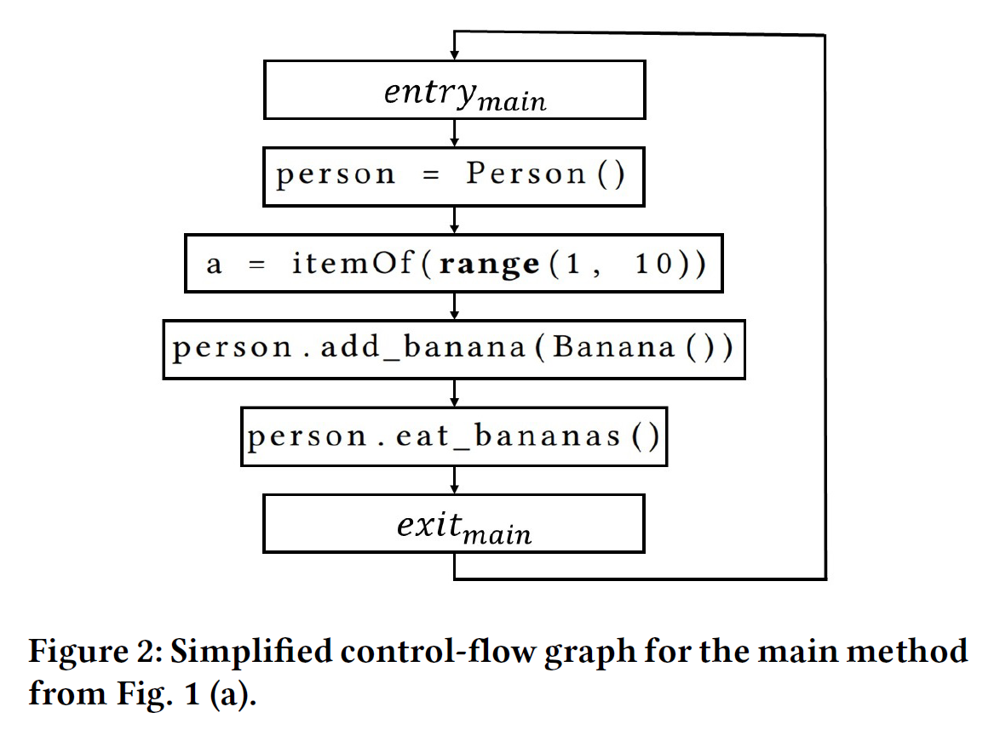
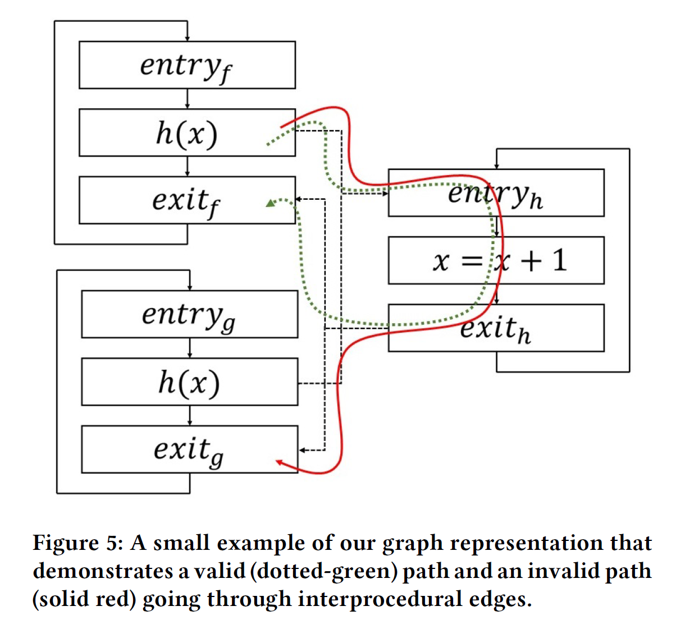

Theory
中間表現の形式的定義
(プログラムはASTで表現する)
- node \(N\):
- Assignment(\(N_A\)):
- 左右の2つのexpressionからなる
- Method invocation(\(N_I\)):
- Target expression:
f,e.f - List of argument expression:
[a, b] - Return(\(N_R\)):
- 1つのexpressionを持つ
-
ex.)
Before:
if condition(): func1() else: func2()After:condition(): func1() func2() - Expression \(E\):
- Name:
- プログラムのidentifier
- ex.)
banana - Member access:
- ex.)
self.bananas - Literal:
- ex.)
1 - Method invocation:
- (Set of all types \(T\))
先ほど述べた中間表現のCFGの名前をSCFGとする
- SCFGの特徴
- Single entry/single exit
- 全てのnodeは1つの親と1つの子
- 各nodeは\(N_A, N_I, N_R\)のどれか
- 全体で1つのサイクルを形成(後述)
-
ex.)
Original program:
def main(): person = Person() for a in range(1, 10): person.add_banana(Banana()) person.eat_bananas()SCFG:
 - サイクルを形成する意味
- SCFGにすることでstatementの順番が失われる
- 何度も繰り返して実行して、fix pointに到達させる必要がある
Intra-procedural analysis
構造的意味論を使って各node(statement)毎の"意味"を定義していく
補助関数の定義
- \(\mathbf{cflow_P}(n_1,n_2)\): SCFGが\(n_1\)->\(n_2\)へのedgeがあるかどうか
- \(\mathbf{scope_P} \; [N \rightarrow T]\): nodeが属している型を返す
-
この図中の全てのnode nに対し、\(\mathbf{scope_P}\)の返り値は[main] - \(\mathbf{func_P} \; [T \times {\it Name} \rightarrow T]\): ある型のattributeの型を返す
-
\(\mathbf{func_P}({\it Banana}, {\it 'eat'})\)の返り値は[Banana:eat]class Banana: def eat(self): pass - \(\mathbf{lhs_P} \; [S \times N_A \rightarrow V]\): stateとassignment nodeから、左辺値の変数情報を返す
- variable \(V \; [T \times {\it Name}]\): scopeの型と識別子
- \(\mathbf{rhs_P} \; [S \times N_A \rightarrow {\cal P}(T)]\): stateとassignment nodeから、右辺値が取りうる型の集合を返す
- \(\mathbf{control_P} \; [S \rightarrow N]\): stateが対応しているnodeを返す
- \(\mathbf{data_P} \; [S \times V \rightarrow {\cal P}(T)]\): stateとvariableから、mappingされている型の集合を返す
Semanticsの定義
これらの補助関数から構成されるnode種類毎の"意味"にしたがって、変数に対する取りうる型のmappingを求める
Assignment
\begin{equation*} \frac {n_1 \in N_A, \mathbf{control_P}(s) = n_1, \mathbf{cflow_P}(n_1,n_2), \mathbf{lhs_P}(n_1) = v, \mathbf{scope_P}(n_1) = f} {\mathbf{data}(s',f,v) = \mathbf{data}(s,f,v) \cup \mathbf{rhs_P}(s,n_1), \mathbf{control_P}(s') = n_2} \end{equation*}
ex.)
| x | {Float} |
| y | {Int, Str} |
| z | {Str} |
\(\mathbf{lhs_P}(n_1)\) = ?
\(x\)\(\mathbf{data}(s,x)\) = ?
{Float}\(\mathbf{rhs_P}(s,n_1)\) = ?
{Int, Str}\(\mathbf{data}(s',x)\) = ?
{Float, Int, Str}解析全体の意味を定義
- このモデルはcontrol tokenを使用している
- 現在解析中のnodeを表す"もの"(cf. \(\mathbf{control_P}\))
- 解析の様子
- 解析の初めはcontrol tokenはentry edgeを指し、変数は空の集合にmappingされる
- 
- Control tokenがcontrol flowに沿って移動
- Control tokenが次のnodeに到達(activated)
- nodeのsemanticsに応じてmappingを更新
- 解析が終わるのはfix pointに到達した時
- 各stepを関数\({\it step}\)と表す
- Non-final stateを受け取り、次のstateを返す
- State \(S\): 以下の2つで構成
- Control tokenの位置
- Data environment(変数 -> 型の集合へのmapping)
- プログラム Pに対する解析の意味(\(\lbrack \! \lbrack P \rbrack \! \rbrack\))を以下のように定義
-
\(\lbrack \! \lbrack P \rbrack \! \rbrack = {\rm step}^k_p(s)\)
(ただし、s: Pの初期状態, k step後にfix pointに到達している)
Converges to fixpoint
背理法で証明
あるプログラム Pが、fixpointへ収束しないとする。
この時、以下を満たすnode \(n\)、 variable \(f,u\)、無限の数列\(i_1 < i_2 < i_3 ...\)が存在する \begin{equation*} \forall j: \mathbf{control_P}({s_i}_j) = n \; \land \; \forall j \exists k < j: \mathbf{data_P}({s_i}_j,f,u) \neq \mathbf{data_P}({s_i}_k,f,u) \end{equation*}
次に、各変数にmappingされた型の集合に対し、 \begin{equation*} \forall s \in S: \mathbf{data_P}(s,f,u) \in {\cal P}(T) \end{equation*} つまり \begin{equation*} \forall k \forall l < k: \mathbf{data_P}({s_i}_l,f,u) \subseteq \mathbf{data_P}({s_i}_k,f,u) \subseteq {\cal P}(T) \end{equation*} よって \begin{equation*} \forall j \exists k < j: \mathbf{data_P}({s_i}_j,f,u) \subset \mathbf{data_P}({s_i}_k,f,u) \subseteq {\cal P}(T) \end{equation*} しかし\({\cal P}(T)\)は有限集合であるため、\(i_1 < i_2 < i_3 ...\)が無限に続くことに矛盾する
Interprocedural Analysis
- 基本はinter-proceduralな解析(SCFG)を利用
- 各メソッドのentry nodeに向けてedgeを張り、exit nodeからedgeを張る

- Invocation nodeは1つ以上のinter-proceduralなエッジを持つ
- Entry nodeは複数のincoming call edgeを持つし、exit nodeは複数のoutgoing return edgeを持つ
- 多態性等により、calleeを静的に1つには絞れない場合があるため
- mappingも、変数に対し、型の集合を割り当てていた
Stackの導入
前節の"意味"の定義をそのまま拡張しただけでは、(context-insensitivityにより)実行し得ないパスが存在してしまう
- Stack function \(\mathbf{stack_P}(s)\)を導入する
- \(\mathbf{stack_P}(s)\): state \(s\)でのstackを返す
Semanticsの定義
Method invocation
\begin{equation*} \frac {n_1 \in N_I, \mathbf{control_P}(s) = n_1, \mathbf{cflow_P}(n_1,n_2)} {\mathbf{control_P}(s') = n', \mathbf{stack_P}(s') = \mathbf{push_P}(\mathbf{stack_P}(s),n_2)} \end{equation*} 
Method exit
\begin{equation*} \frac {\mathbf{control_P}(s) = c} {\mathbf{control_P}(s') = \mathbf{top_P}(\mathbf{stack_P}(s)), \mathbf{stack_P}(s') = \mathbf{pop_P}(\mathbf{stack_P}(s))} \end{equation*}
Return
- \(\mathbf{expr_p} \; [N_R \rightarrow E]\): Return nodeでのexpressionを返す
- \(\mathbf{eval_p} \; [S \times E \rightarrow {\cal P}(T)]\): Stateでのexpressionを評価した結果に対する、mappingされた型の集合を返す
- Special variable \(\mu\): 返り値を表すdummy変数
\begin{equation*} \frac {n_1 \in N_R, \mathbf{control_P}(s) = n_1, \mathbf{cflow_P}(n_1,n_2), \mathbf{expr_p}(n_1) = e, \mathbf{scope_P}(n_1) = f} {\mathbf{data_P}(s', f, \mu) = \mathbf{data_P}(s, f, \mu) \cup \mathbf{eval_P}(s, e), \mathbf{control_P}(s') = n_2} \end{equation*}
ex.)
| x | {Float} |
\(\mathbf{data_P}(s,\mu)\) = ?
{}\(\mathbf{eval_P}(s,e)\) = ?
{Float}\(\mathbf{data_P}(s',\mu)\) = ?
{Float}Soundnessの大雑把な証明
- 方針
- SCFGのnode列に対し、帰納法を適用して証明を行う
- 
- 